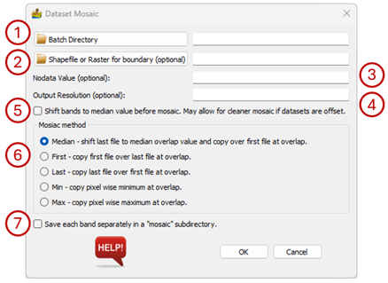

Dataset Mosaic¶
This will allow adjacent or overlapping datasets to be mosaiced into a single dataset. The input is a directory which contains ONLY data to be mosaiced.
The user can mosaic/merge files with different numbers of bands, and only bands with common names will be merged. If files being mosaicked have z values which are offset, the user can select to shift the bands to their respective median value prior to merge to minimise this.
The options for this module are as follows:
Batch Directory – folder location of the files to be mosaicked.
Shapefile or Raster for boundary (optional) - This is an optional shapefile or raster file that can be used to cut the mosaicked data to a specific boundary.
Nodata Value (optional) - Optional definition for a nodata/null value
Output Resolution (optional) - Optional definition for the mosaicked dataset’s cell size.
Shift bands to median value before mosaic. May allow for cleaner mosaic if datasets are offset - unchecked by default.
Mosaic Method:
Median - shift last file to median overlap value and copy over first file at overlap.
First - copy first file over last file at overlap.
Last - copy last file over first file at overlap.
Min - copy pixel wise minimum at overlap.
Max - copy pixel wise maximum at overlap.
Save each band separately in a “mosaic” subdirectory - this is useful when the resultant mosaic is too large.
